Katofrp使用帮助，最全Minecraft联机问题解答！
软件官网：https://frp.katomegumi.net
软件下载地址：https://wwk.lanzoul.com/b023tt2de 密码 etq9
任何问题解答群：793663165
一、软件部分问题
🌿1.软件登录问题
如果无法登录，可能请先检查你的电脑网络是否有网。关闭加速器。更改电脑DNS为223.5.5.5或者其他非运营商DNS。
如果还是无法登陆，可以下载一个爱加速软件，然后登陆之后关闭即可。
1.3.6版本后增加了用户名密码登录，注意：qq登录后可以绑定已注册的用户名密码登录，但是以前的用户名密码登录不再视为单独账号，与qq登录合并为一个账号。当qq登录无法登录时可以使用用户名密码登录。
☘️2.安装失败、打开白屏
可能原因一：
现象：安装后打不开，白屏，安装提示缺失webview2
使用webview2修复工具修复，
https://wwfj.lanzoul.com/b0sxlfdri
密码:biar
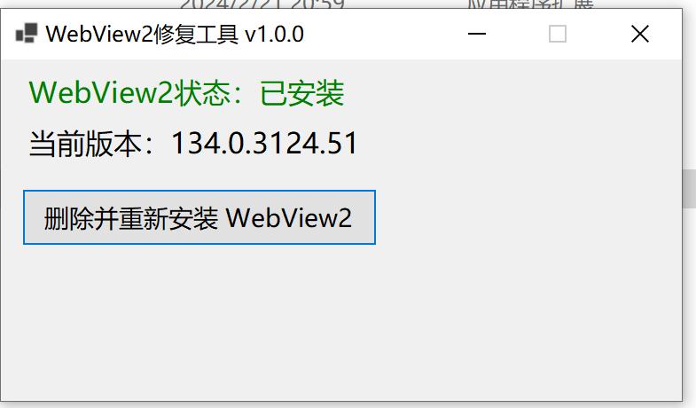
点击按钮重装即可。
可能原因二：
现象：edge无法打开，软件打开没反应
请不要禁用edge浏览器，可以使用edge block工具启用。如果edge已损坏请重装或使用webview2修复工具。
2.1 考虑使用修复版本（187MB）版本，该版本集成固定webview2版本。在官网首页下载里，包含修复版本。2.2 安装时候无法安装webview2可以考虑使用修复edge和webview2问题，教程如下:
如果不管用，可以重新安装webview2，方法是：首先看这个教程把相关的注册表删除https://zhuanlan.zhihu.com/p/642003474 ，然后再重新下载webview2安装程序安装即可。（这个方法最好用，软件白屏不显示也使用该方法）
🎋3.提示核心程序被kill
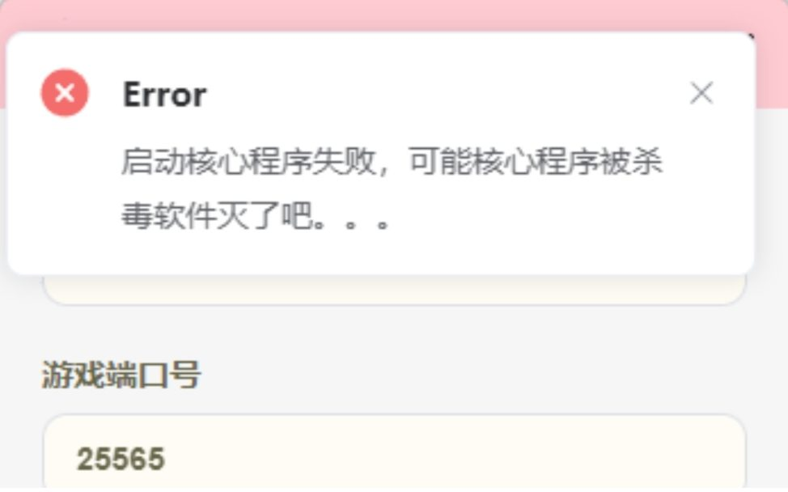
第一步：首先检查端口是不是填错了！！
端口只能是1-65535之间的数字，开头不能以0开头，不能超出位数！！
第二步：关闭系统防火墙相关
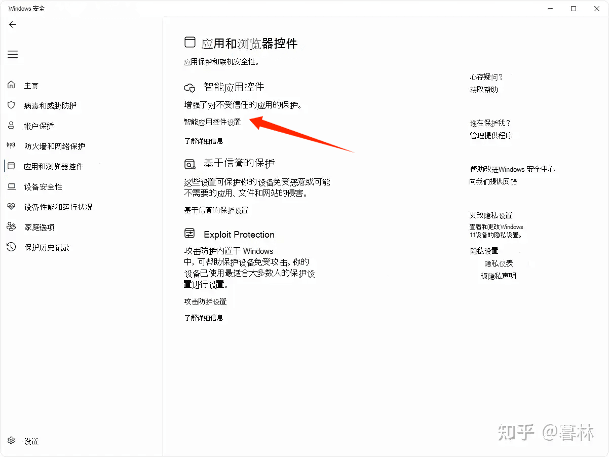
最新win11系统需要在这里关闭基于声誉的保护！
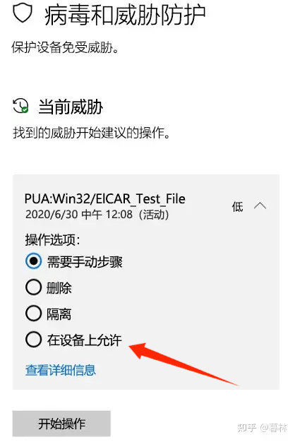
同样，最后如果已经被拦截，找到被拦截的，点击在设备上允许。
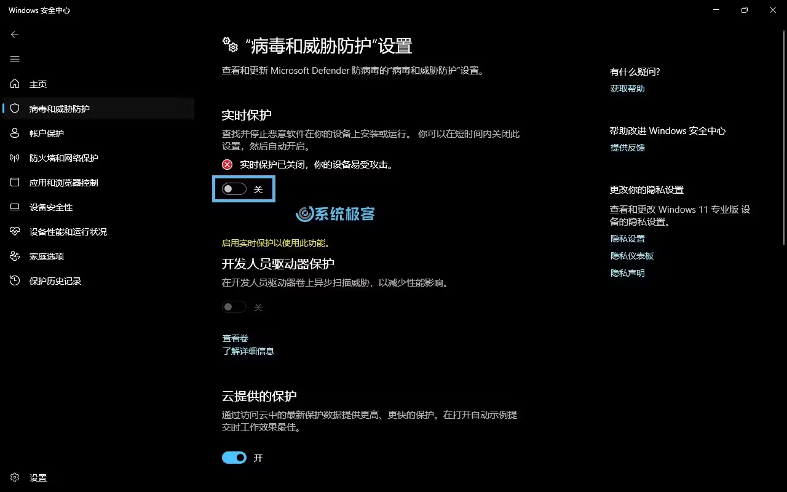
同样建议关闭实时保护。
第三步：重装软件或补充文件
然后还不行检查程序目录下lib文件夹下有没有frpc.exe，没有的话下载下面的链接：
https://wwfj.lanzoul.com/iGS452ptlrch 密码:8q4m
放到程序目录/lib/下面
如果还是不行，lib文件夹中也有相关文件，请从官网下载最新版安装包，不要使用朋友发来的压缩包。
以下是以前的文档：
出现如图所示错误,
那么检查杀毒软件是否删除了frpc 程序，在隔离区检查一下，然后添加信任即可。
或者检查安装根目录是否有lib/frpc.exe文件,有的话就不是被删了
检查windows安全中心（defender）里面是否有被隔离的程序文件，如果有就恢复，然后记得添加信任文件。
添加信任文件夹教程：https://zhuanlan.zhihu.com/p/603824058?utm_id=0
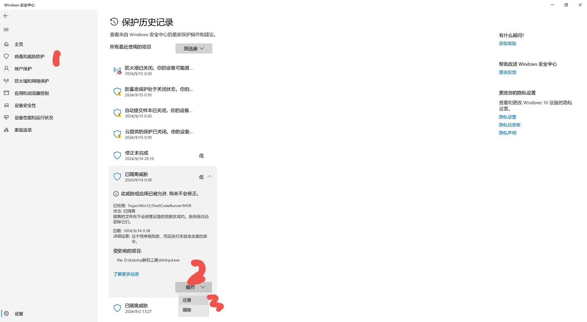
如果还是不行，关闭杀毒软件，然后重新安装软件。实在最后不行联系客服解决。
检查用户名中是否有空格;如果有也可能导致这个错误，但是在lib/中有程序(该bug已修复)
😣4.连接成功，状态测试显示离线服务器
检查自己端口是不是写正确了，游戏是否正常！
换一个端口试试。
也可能测试服务器当前异常了，请注意官方公告。
😇5.如何关闭防火墙
windows11 如何关闭防火墙_win11关闭防火墙和杀毒软件-CSDN博客
🎗️6.免费搭建自己的节点
🎀7.星露谷联机教程
🎿8.我的世界速览教程
🧸9.如何多端口？
在输入端口的时候使用英文逗号,来把你需要映射的端口隔开。
🥊10.katofrp高级模式如何使用
过去，我们只有一个节点，人一多就“你卡我不卡”。为了让大家都能流畅联机，腐竹（服主）一口气放出了多个节点。现在，每个人都可以挑自己延迟最低的那条线，告别卡顿！
高级模式仅限 Pro 会员，普通用户无法开启。 连接完成后点「分享」快速分享给好友。
二、Minecraft联机问题
🐮6.登录失败：无效会话（请尝试重启）
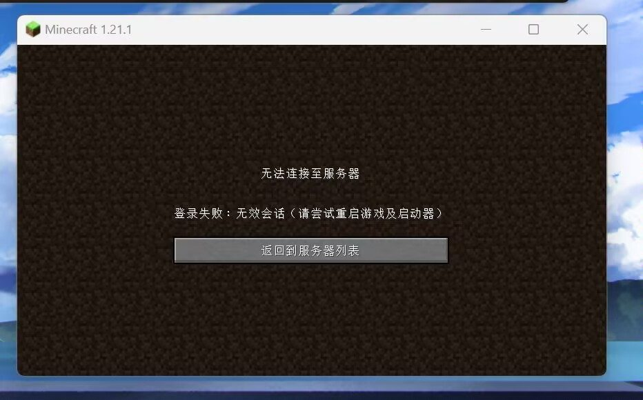
在需要辅助 Mod 时不使用且不是正版MC，会出现 登录失败: 无效会话 (请尝试重启游戏及启动器) 问题。
可以通过安装辅助MOD 或 第三方皮肤站登录解决。
办法一、安装辅助mod
请根据您的游戏版本安装辅助Mod，注意你的游戏版本和游戏是forge还是fabric版本。可以使用下面的模组，在pcl2中搜索安装即可。
[LSP]自定义局域网联机 (Lan Server Properties) - MC百科|最大的Minecraft中文MOD百科
[mcwifipnp]更高级联机设置 (LAN World Plug-n-Play) - MC百科|最大的Minecraft中文MOD百科
使用方法：在开启局域网时，关闭在线模式或正版验证，再点击创建即可。
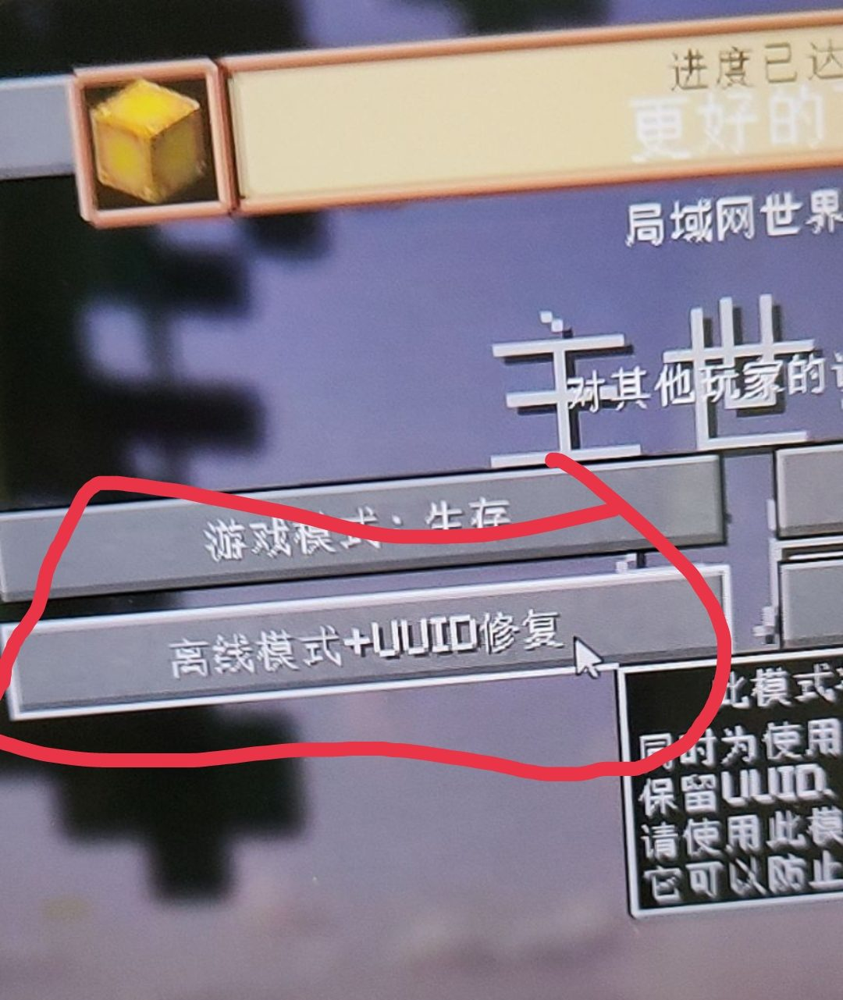
某些整合包已经有联机 Mod，这可以通过您在游戏内尝试打开 对局域网开放 功能时是否有 在线模式 的配置来判断。
办法二、第三方皮肤站登录
使用第三方皮肤站就可以同时使用皮肤还可以解决这个问题。注册登录皮肤站之后按照操作导入到启动器里面即可。
教程可以参考下面的链接。
😥7.出现聊天消息验证失败，再发就断开连接
典型如上图所示
因为众所周知,非常重视游戏体验的Moiang在1.19.1及以上版本中加入了聊天举报机制,即使是第三方服务器中的聊天也要受到Mojang的监管。
有一个插件可以搞定这个问题
[1.19.x][No Chat Reports]使他人无法举报聊天信息/全局禁用服务器聊天举报[SCT] https://www.mcmod.cn/class/6756.html 服务端和客户端都装上去就可以正常发送聊天文字了
🌺8. invaild characters inusername
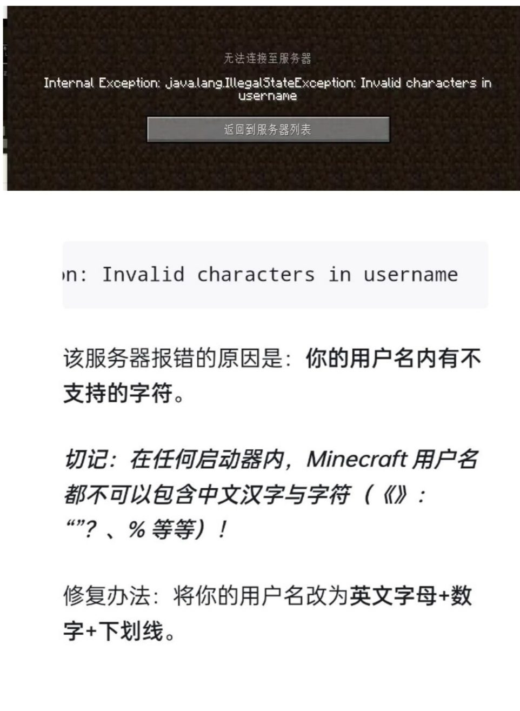
🎮9.连接上自动断开、掉虚空 排查指南
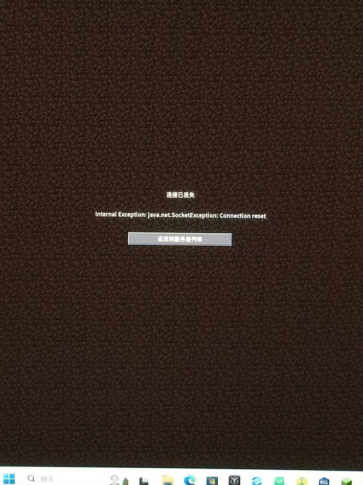
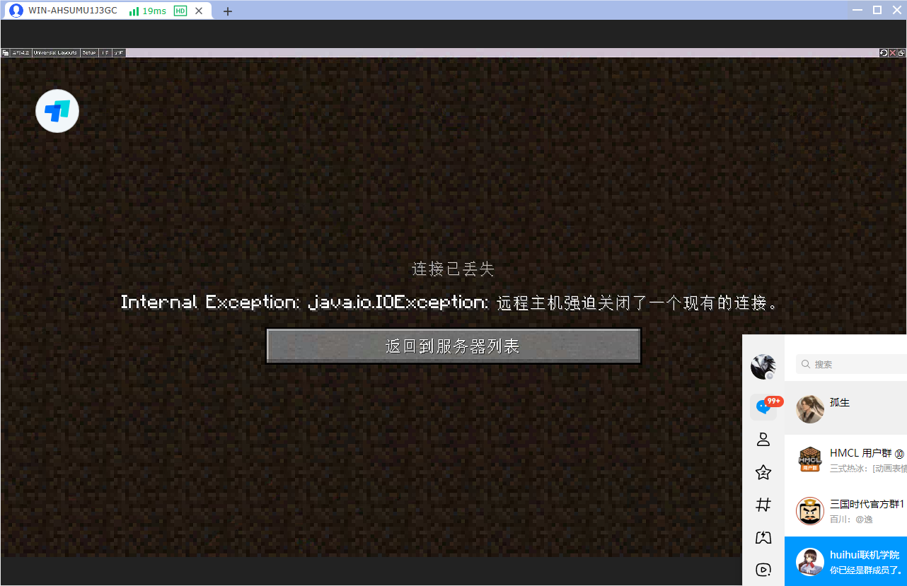
1.可能是免费节点人太多了，使用赞助节点。
2.让你的朋友切换下java版本试试，建议使用推荐java版本
3.你朋友的电脑内存分配问题，分配给游戏的内存不要拉满也不要过低，可以选择自动，大型整合包一定要留足内存。
4.以上检查均没有问题，请检查你的mod列表内是否有冲突模组，这个问题最不好排查，建议在官群询问意见。建议使用原版测试一下，如果没有问题那就是有mod冲突了。
4.房主和成员把渲染距离拉低，模拟区块数拉低一点再进入游戏。
如果还是这样考虑房主网络太差，建议换个人当房主试试。
6.其他任然无法解决的问题可以加官群询问。
如果错误提示是unknown未知主机，可能是你的朋友连接地址输错了，建议crtl+v粘贴，记得调成英文输入法！！！！。
💔10.连接中止、连接超时、被迫断开
房主和成员把渲染距离拉低，模拟区块数拉低一点再进入游戏。
如果还是这样考虑房主网络太差，建议换个人当房主试试。
🍓11. 进入后加载不出地图，随后自动退出，且显示connection rest
由于不同运营商之间结算以及各家政策不同，跨运营商有丢包风险，特别是晚高峰丢包情况，导致进入不了地图，表现为其他人能进，可能某些人不行，然后不间断随机断开，排除掉其他游戏问题，那么就是可能丢包问题。目前大多数服务器节点都是电信骨干网络，如果你是移动或联通运营商，建议切换到电信（热点）网络下联机，防止晚高峰期丢包风险而导致游戏联机断开。（移动家特别容易丢包，特别是房主建议尽量使用电信网络）
🍜12.自然之旅1.1版本连接不上，提示getCont:0
将蝴蝶模组更新为最新版本或者使用自然之旅1.2
🍊13.提示simplelogin相关的错误
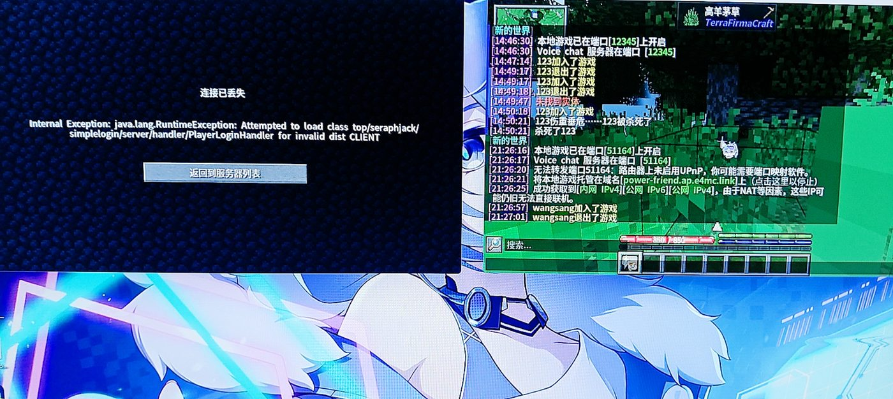
如果提示如图错误，请把simplelogin模组删除。
影响整合包：群峦
🍜14.天境模组导致出现进入即退出
联机报上面的错误
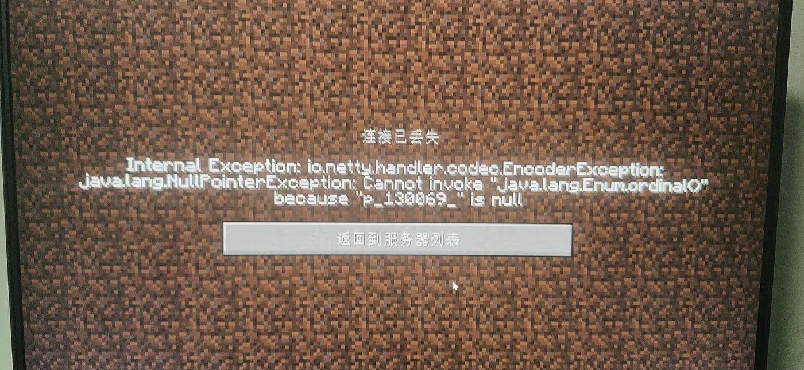
查询日志有类似内容
[0911月2024 15:15:25.638] [Render thread/ERROR] [Apotheosis : Adventure/]: Insufficient number of affixes to satisfy the loot rules (ignoring backup rules) of rarity mythic for category helmetRequired: 3; Provided: 2
[0911月2024 15:15:25.638] [Render thread/ERROR] [Apotheosis : Adventure/]: Insufficient number of affixes to satisfy the loot rules (ignoring backup rules) of rarity mythic for category bootsRequired: 3; Provided: 2
遇到此相关信息，是Aether mod （天境模组）出现故障。用 Aether 1.4.2 替换 Aether 1.5.0 解决了这个问题。（在更高版本尚未测试）
影响整合包：自制整合包
15.简单语音聊天的设置教程
需要联机工具1.4.3以上支持。
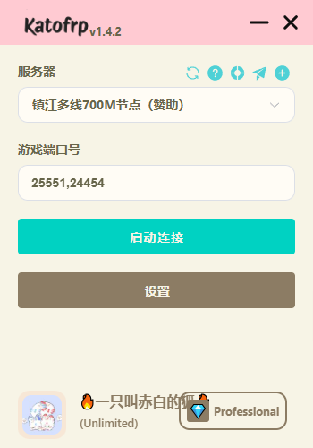
我们在设置里第一个通道类型tcp
第二个通道udp，然后第一个我的世界端口填开放出来的例如25565，第二个是简单语音的端口。像图里一样填，注意要是英文逗号
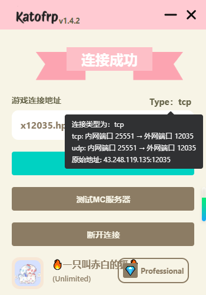
记录下udp这条的原始地址，注意如果端口号不一样需要自己拼一下原始连接地址。
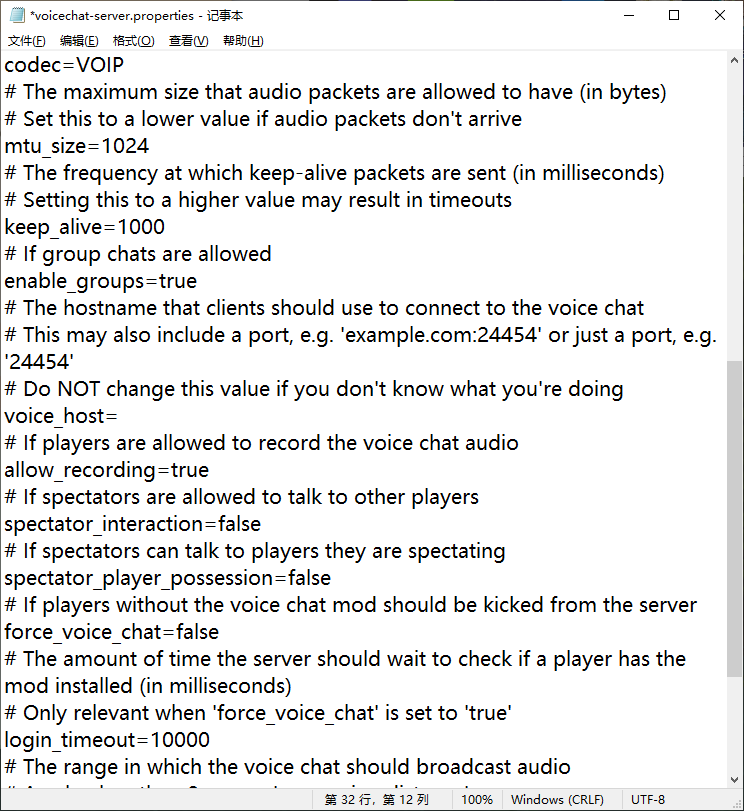
所有人voice_host=后面填上原始地址，如voice_host=43.248.119.135:12345
包括房主都要这么配置，然后启动游戏即可。